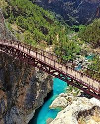

Mut İlçesi

Mut, Mersin'in doğal ve tarihi zenginlikleriyle bilinen bir ilçesidir. Zeytin ve kayısı üretimiyle öne çıkar.
Gezilecek Yerler
- Mut Kalesi: Tarihi dokusu ve manzarasıyla ziyaretçilerin ilgisini çeken önemli bir kaledir.
- Alahan Manastırı: UNESCO Dünya Mirası Geçici Listesi'nde yer alan bu manastır, bölgenin tarihi miraslarındandır.
- Mut Yerköprü Şelalesi: Doğal güzelliğiyle bilinen bu şelale, fotoğraf tutkunlarının uğrak noktasıdır.
Yöresel Lezzetler
Mut'ta zeytinyağlı yemekler, organik kayısı ürünleri ve Mut Karası üzümü oldukça meşhurdur.
Ana Sayfaya Dön